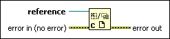

Close Reference Function
Owning Palette: Application Control VIs and Functions
Requires: Base Development System
Closes a refnum associated with an open VI, VI object, an open application instance, or a .NET or ActiveX object.

 Add to the block diagram Add to the block diagram |
 Find on the palette Find on the palette |